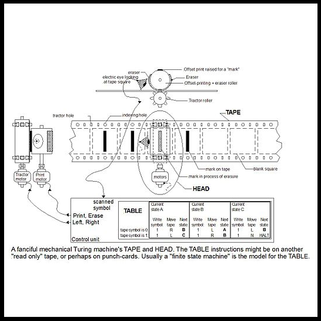

Early functionalism
Wed., Feb. 26
This class session covers early functionalism, inspired by Turing machines and early work in computing.
Key Concepts: Functionalism, Turing machines
Readings:
(optional) Putnam, “The Nature of Mental States” (Textbook ch. 11)
Class Notes:
Other Resources:
Stanford Encyclopedia of Philosophy
Internet Encyclopedia of Philosophy